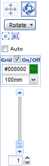

Anatomographyタブのメインパネルは下記の構成になっています。
- コントロール

- ボタン：このボタンを押した状態で、アナトモグラフィーをドラッグすると視線を平行移動します。
- ボタン：このボタンを押した状態で、アナトモグラフィーをドラッグすると中心点の周りを回転します。
- Rotateボタン：視点を前後左右上下に移動することができます。
- ボタン：このボタンを押すと、描画中のパーツ群の中央に視線の中心点が平行移動します。
- ボタン：このボタンを押すと、描画中のパーツ群の中央に視線の中心点を平行移動し、すべてのパーツが収まるように画像を拡大・縮小します。
- Autoチェックボックス：チェックを入れると指定時間毎に指定角度ずつ画像が回転します。
- Gridチェックボックス：チェックを入れるとGridを指定色、指定間隔で描画します。。
- Zoomスライダー：Zoomの度合いをスライダーのドラッグで指定できます。
- Zoomテキストボックス：Zoomの度合いを数値で指定できます。
- Anatomography
各種設定を反映したAnatomgraphy画像が表示されます。
画像上でのマウス操作により下記のような動作をします。
- マウスドラッグ
平行移動／回転のモードに応じて、マウスをドラッグした方向に平行移動／回転します。
ドラッグ前に0.4秒間マウスを押し下げたままにすると、一時的に平行移動／回転モードの切り替えが可能です。
- 中央ボタンドラッグ
マウスをドラッグした方向に平行移動します。
- マウスホイール回転
マウスホイールを手前から奥に回転：マウスポインタを中心に拡大します。
マウスホイールを奥から手前に回転：マウスポインタを中心に縮小します。
- クリック
Pickモードの場合、該当位置のパーツをピックし、ライトパネルのPickリストに詳細が表示されます。
Pinモードの場合、該当位置にピンを追加します。
- ダブルクリック
ダブルクリックした位置が中心になるように平行移動します。